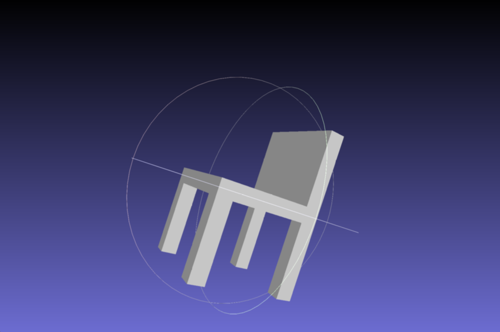

Finite Element Method Simulation
Physics Simulation, Continuum Mechanics, Large Deformations
- What I built: A comprehensive 3D Finite Element Method (FEM) solver for simulating volumetric object deformation.
- Why it matters: Accurately modeling physical materials is crucial for virtual reality, engineering, and visual effects.
- Proof: Robustly converges on large deformations using Neo-Hookean physics and Newton's Method.
Problem / Goal
Simulating the physical behavior of soft materials requires more than simple mass-spring systems. To capture realistic volume preservation and stress responses, we must model Continuum Mechanics.
The goal was to implement a robust 3D FEM solver capable of handling both small (Linear Elastic) and large (Neo-Hookean) deformations, solving for static equilibrium where internal elastic forces balance external loads.
My Contribution
I built the simulation engine from the ground up:
- Continuum Mechanics: Modeled deformation using the Deformation Gradient (F) and the First Piola-Kirchhoff stress tensor (P).
- Material Models: Implemented both Linear Elasticity (Hooke's Law) and Neo-Hookean hyperelasticity.
- Sparse Solvers: Assembled global Stiffness Matrices (K) and utilized sparse conjugate gradient solvers for efficiency.
- Nonlinear Optimization: Implemented Newton's Method with a backtracking line search to robustly solve the nonlinear energy minimization problem.
Technical Approach
1. Stiffness Matrix Assembly
A critical part of FEM is assembling the global stiffness matrix from element-wise contributions. This function computes the derivative of force with respect to position, effectively the "spring constant" for the entire mesh.
def stiffness_matrix(self, vertices: array) -> spmatrix:
""" Computes the global sparse stiffness matrix K. """
# Iterate over all tet elements
for t in range(num_tets):
# ... (retrieve deformation gradient F) ...
# Compute element contribution Kt = volume * dP/dx * dF/dx
# Chain rule: dP/dx = dP/dF * dF/dx
vol = volumes[t]
dP_dF = material.stress_differential(F)
dF_dxt = dF_dx[t]
dP_dxt = dP_dF @ dF_dxt
Kt = vol * dF_dxt.T @ dP_dxt
# Map local 12x12 matrix to global indices
for i in range(m):
for j in range(m):
triplets.append([index_map[i], index_map[j], Kt[i, j]])
# Construct the sparse matrix from triplets
K = csc_matrix((vals, (row_inds, col_inds)), shape=(N*dim, N*dim))
return K2. Neo-Hookean Material Model
The Neo-Hookean model extends linear elasticity to handle large rotations and deformations physically correctly. It uses the logarithm of the determinant of the deformation gradient ($J$) to enforce volume preservation (resisting compression to zero volume).
class NeoHookean(Material):
def energy_density(self, F: array) -> float:
"""
Compute energy density W for hyperelastic material.
W = 0.5 * mu * (I1 - dim - 2*log(J)) + 0.5 * lm * log(J)^2
"""
dim = F.shape[0]
I1 = np.dot(F.ravel(), F.ravel())
logJ = np.log(np.linalg.det(F))
W = 0.5 * self.mu * (I1 - dim - 2 * logJ) + 0.5 * self.lm * logJ ** 2
return W
def stress_tensor(self, F: array) -> array:
""" First Piola-Kirchhoff stress tensor P. """
F_invT = np.linalg.inv(F).T
logJ = np.log(np.linalg.det(F))
P = self.mu * (F - F_invT) + self.lm * logJ * F_invT
return PValidation / Results
The simulation was validated by subjecting meshes to large gravity loads. The Neo-Hookean model correctly demonstrated nonlinear stiffening at high strains, unlike linear elastic models which would invert or "blow up."
Lessons + Next Steps
Lesson: Implementing standard Newton's Method is rarely enough for physics simulation. A robust line search (globalization strategy) is absolutely necessary to prevent the solver from taking steps that invert elements.
Next Steps: Extending the system to support dynamic simulation with implicit time integration (Backward Euler) for stable motion.